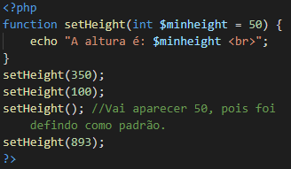

Sumário:
- PHP é um acrônimo para "PHP: Hypertext Preprocessor"
- PHP é uma linguagem de script de código aberto amplamente usada
- Os scripts PHP são executados no servidor
- O PHP é gratuito para baixar
- Os arquivos PHP pode conter texto, HTML, CSS, JavaScript e código PHP
- O código PHP é executado no servidor e o resultado é retornado ao navegador como HTML simples
- Arquivos PHP têm extensão .php
O que podemos fazer com PHP?
- PHP pode gerar conteúdo de páginas dinâmicas
- O PHP pode criar, abrir, ler, gravar, excluir e fechar arquivos no servidor
- PHP pode coletar dados de formulário
- PHP pode enviar e receber cookies
- PHP pode adcionar, excluir, modificar dados em seu banco de dados
- PHP pode ser usado para controlar o acesso do usuário
- PHP pode criptografar dados
Um script PHP é executado no servidor e o resultado HTML simples é enviado de volta ao navegador.
Um script PHP pode ser colocado em qualquer lugar no documento.
Um script PHP começa <?php e termina com ?>
Um arquivo PHP normalmente contém tags HTML e alguns códigos de script PHP.
Abaixo, temos um exemplo de um arquivo PHP simples, com um script PHP que usa uma função PHP embutida "echo" para gerar o texto "Olá, mundo!" em uma página da web.

Nota:As intruções PHP terminam com um ponto e vírgula (;).
Sensibilidade a maiúsculas e minúsculas do PHP
No PHP, palavras-chaves (por exemplo if, else, while, echo, etc.), as classes, funções e funções definidas pelo utilizador não estão maiúsculas e minúsculas.
No exemplo abaixo, todas as três declarações de eco são iguais e legais:

Nota: No entando, todos os nomes de variáveis diferenciam maiúsculas de minúsculas.
Já as variáveis não podem ter letras diferentes como no exemplo passado, elas já são mais rigorosas perante a isso. Elas precisam estar escritas do mesmo jeito de quando foram criadas.
Os comentários farão com que as linhas de códigos não funcionem, tendo como finalidade passar a ideia daquele ponto em que foi comentado. No PHP temos várias formas para comentar:
Podendo ser com // (usado por linhas)
#(por linha)
e /*, */(comentar mais de uma linha)
Para criamos uma variável começamos com o sinal $, seguindo pelo nome da variável.
Exemplo:

Após a execução das intruções acima, a variável $txt conterá o valor Hello world!, a variável $x conterá o valor 5 e a variável $y conterá 10.5.
OBS: Ao atribuir um valor de texto para uma variável, coloque o valor dentro de aspas.
Nota: Ao contrário de outras linguagens de programação, o PHP não tem comando para declarar o tipo da variável. Ele é criado no momento em que você atribuiu um valor a ele pela primeira vez. (Pense nas variáveis como contêiners para armazenar dados).
- Deve começar com letra ou caractere de sublinhado
- Não pode começar com número
- Pode conter apenas caracteres alfanumericos e sublinhados (Az, 0-9 e _)
- Diferenciam maiúsuclas de minúsculas
O echo é usado para dar um print na tela, enviar dados a tela.
O exemplo a seguir mostra como é o seu uso:

Podendo fazer a importação da variável da seguinte forma também:

No PHP as variáveis podem ser declaradas em qualquer lugar no scrip. O escopo de uma variável é a parte do script onde a variável pode ser referenciada / usada.
Podendo ter três escopos:
Uma variável criada fora de uma função só pode ser acessada fora da função e tem um ESCOPO GLOBAL.

Uma variável criada dentro de uma função tem um ESCOPO LOCAL e só pode ser acessada dentro da função:

Você pode ter variáveis locais com o mesmo nome em funções diferentes, porque as variáveis locais só são reconhecidas pela função na qual são declaradas.
PHP a palara-chave global
A palavra-chave global é usada para acessar uma variável global de dentro de uma função. Para fazer isso, use a palavra-chave global antes das variáveis (dentro da função):

O PHP também armazena todas as variáveis globais dentro de um array. Contendo o nome da variável. Este array também é acessível a partir de funções e pode ser usado para atualizar variáveis globais.
O exemplo anterior pode ser escrito dessa seguinte forma:

PHP palavra-chave estática
Normalmente, quando uma função é concluída / executada, todas as suas variáveis são excluídas. No entando, às vezes queremos que uma variável local NÂO seja excluída. Precisamos disso para um novo trabalho.
Para fazer isso, use o static ao declara a variável pela primeira vez.

Então, cada vez que a função é chamada, essa variável ainda terá as informações que continha da última vez que a função foi chamada.
OBS: A variável ainda é local para a função.
No php podemos usar o echo e o print para printar na tela.
Echo e Print Statement
Os dois são mais ou menos iguais, ambos são usados para enviar um dado na tela.
echo não tem valor de retorno enquanto o print tem o valor 1 de retorno, portanto, pode ser usado em expressões. echo pode ter vários parâmetros (embora esse uso seja raro), enquanto print pode ter um argumento. echo é ligeiramente mais rápido que do print.
A declaração echo em PHP
A echo pode ser usada com ou sem parentêses: echo ou echo().
Texto de exibição:
O exemplo a seguir mostra que podemos usar algumas marcações do HTML no PHP:

Variáveis de exibição:
O exemplo a seguir mostra como gerar texto e variáveis com a echo intrução:
.png)
Podendo ser usado com parentêses ou não. Um exemplo de uso do print:

Variáveis de exibição:
O exemplo a seguir mostra como gerar texto e variáveis com o print:

Variáveis podem armazerar diferentes tipos de dados, e diferentes tipos de dados podem fazer diferentes coisas.
PHP suporta os seguintes dados:
- Fragmento
- Inteiro
- Float (Podendo ser chamado de double)
- Boleano
- Variedade
- Objeto
- Nulo
- Recurso
String
Uma sequência de caracteres, como "Hello world". Ficando entre aspas, podendo ser aspas simples ou aspas duplas.
Inteiro
São números que não contém o uso da virgula ou ponto, ficando entre -2.147.483.648 e 2.147.483.647. E precisam ter pelo menos 1 dígito.
No exemplo a seguir, %x é um número inteiro. A função PHP var_dump() retorna o tipo de dado e o valor:
Float
É um número flutuante (que contém casa depois da virgula).
Boleano
Um valor boolean representa estados: true ou false. Costumam ser usado em testes condicionais.
Array PHP
Uma matriz que armazena vários vetore em uma única variável.
No exemplo a seguir $cars é uma array. A função PHP var_dump() retorna o tipo de dados e os valores.
Objeto
Classes e objetos são os dois aspectos principais da programação orientada a objetos.
Uma classe é um modelo para o objeto e um objeto é uma instância de uma classe. Quando os objetos são criados, eles herdam todas as propridades e comportamentos da classe, mas cada objeto terá valores diferentes para as propridades.
Vamos supor que temos uma classe chamada Carros. Um carro pode ter propridades como modelo, cor, etc. Podemos definir variáveis como $modelo, $cor, e assim por diante, pra conter os valores dessas propridades.
Quando os objetos individuais ("Fox", "Gol", "Opala") são criados, eles herdam todas as propridades e comportamentos da classe, mas cada obejto terá valores diferentes para as propridades.
Se você criar uma função _construct(), o PHP irá automaticamente chamar esta função quando você criar um objeto de uma classe.

Valor Nulo
Null é um tipo de dado que pode apenas um valor: NULL.
Uma variável deste tipo é uma variável que não possui nenhum atributo a ela.
OBS: Se uma variável for criada sem um valor, será automaticamente atribuído a ela um valor NULL.
As variáveis também podem ser esvaziadas definindo o valor NULL:

Recurso PHP
O tipo de recusro especial não é um tipo de dados real. É o armazenamento de uma referência a funções e recursos externos ao PHP.
Um exemplo comum do uso é no banco de dados.
Algumas funções da String
srtlen() - Retorna o comprimento da string
Retorna o comprimento da string.

Str_word_count()
Conta o número de palavras em uma string.

strrev()
Reverte uma string.

Strpos()
Pesquisa um texto dentro de uma string.

A primeira posição do caractere é 0 e não 1.
str_replace()
Substitui o texto dentro de um string. Trocar, por esse, neste texto.

No PHP quando você troca o valor das variáveis elas são automaticamente ajustadas, se erá string passará a ser o que você colocou.
Inteiros
São números que não possuem virgulas (ou ponto).
Nota: Uma coisa importante para se saber é que mesmo que o 4 * 2,5 for 10, o resultado armazenado será float, pois um dos operadores é flaot(2,5).
PHP tem as seguintes constantes predefinidas para inteiros:
- PHP_INT_MAX - O maior número inteiro suportado
- PHP_INT_MIN - O menor número inteiro suportado
- PHP_INT_SIZE - O tamanho do número inteiro em bytes
PHP tem as seguintes funções para verificar se o tipo de uma variável é inteiro:
- is_int()
- is_integer() - alias de in_int()
- is_long() - alias de is_int()
Exemplo:

O resultado sera em bool, falando se é true ou false.
Float
Um número que tem uma virgula (ou ponto).
O PHP tem as seguintes constantes predefinidas para flutuantes:
- PHP_FLOAT_MAX - O maior número de ponto flutuante
- PHP_FLOAT_MIN - O menor número de ponto flutuante
- -PHP_FLOAT_MAX - O menor número de ponto flutuante negativo
- PHP_FLOAT_DIG - O número de dígitos decimais que podem ser arredondados para um ponto flutuante e vicer-versa sem perda de precisão
- PHP_FLOAT_EPSILON - O menor número positivo x representável, de modo que x + 1,0 != 1,0
PHP tem as seguintes funções para verificar se o tipo de uma variável é flutuante
- is_float()
- is_double() - alias de is is_float()
Infinity
Um número maior que PHP_FLOAT_MAX é infinito.
PHP tem as seguintes funções para verificar se um valor é infinito ou não:
- is_infinite()
- is_finite()
NaN
NaN significa Não é um número. Usado para operações matemáticas impossíveis.
Tendo a seguinte função:
Strings Numéricas
A função is_numeric() pode ser usada para descobrir se uma variável é numérica. A função retorna verdadeiro se a variável for número ou uma string númerica, false caso contrário.
Casting Strings e Floats to Integers
Às vezes, você precisa converter um valor numérico em outro tipo de dados.
As funções (int), (inteiro) ou intval() são frequentemente usadas para converter um valor em um inteiro.

pi()
Retorna um valor de PI.
min() e max()
As funções min() e max() pode ser usadas para encontrar o valor mais baixo ou mais alto em uma lista de argumentos:

abs()
Retorna um valor absoluto (positivo) de um número:
Caso o número for -1.3, vai retornar 1.3.
sqrt()
Retorna uma raiz quadrada de um número.
round()
Arredonda um número flutuante para um número inteiro mais próximo:
0.8 = 1
0.49 = 0
rand()
Gera número aleatório.
echo rand();
Para obeter mais controle sobre o número, você pode adicionar parâmetros min e max opcionais para especificar o inteiro mais baixo e o inteiro mais alto a ser retornado.
Por exemplo, se você deseja obter um número aleatório entre 0 - 100 (inclusive), use rand(10, 100)
Uma constante é um identificador (nome) para um valor simples. O valor não pode ser alterado durante o script. Um nome de constante válido começa com uma letra ou sublinhado (sem o sinal $ antes do nome da constante).
Nota: Ao contrário das variáveis, as constantes são automaticamente globais em todo scprit.
Sintaxe:
Para criar esta constante, usamos define().
define(name, value, case-insensitive)
Parâmetros:
- Name: especifica o nome da variável
- Value: especifica o valor da constante
- case-insensitive: especifica se o nome da constante deve ser indiferente a maiúsculas ou minúsculas. Por padrão vem false
Caso queira mudar o case-insensitive, coloque true.
Matrizes Constantes
Podemos criar array usando o define():

Constantes Globias
As constantes são globais e podem ser usadas em todo o script.
O exemplo a seguir usa uma constante dentro de uma função, mesmo se for definida fora da função:

O PHP divide os operadores nos seguintes grupos:
- Operadores aritiméticos
- Operadores de atribuição
- Operadores de comparação
- Operadores de incremento / decremento
- Operadores lógicos
- Operadores de string
- Operadores de matriz
- Operadores de atribuição
Operadores aritiméticos:
Usados para fazer contas de adição, subtração, mutiplicação, etc...

Operadores de Atribuição
Usados com valores numéricos para gravar um valor em uma variável.

Operadores de comparação
Usado para comprar dois valores.

Operadores de Incremento / decremento
Usados para incrementar / descrementar uma variável

Operadores lógicos
Usado para combinar declarações condicionais.

Operadores de string
São projetados para string.

Operadores de Array
São usados para comparar array.

Operadores de atribuição condicional
Usados para definir um valor dependendo das condições.

Funções usadas para executar ações diferentes com base nas condições.
Declarações condicionais de PHP
Muitas vezes ao criar um código você deseja que o programa possa executar diferentes ações com base no que o usuário solicita. Para isso, usamos o if, else e o elseif.
Os significados de cada uma:
- if - executa algum código se uma condição for verdadeira
- if...else - executa alguma condição caso uma for verdadeira e a outra falsa
- if...elseif...else - executa códigos diferentes para mais de duas condições
- switch - seleciona um de muitos blocos de códigos para serem executados
if (condições) {
código para ser executado caso a condição for verdadeira;
}

if (condição) {
código para ser executado caso a condição for verdadeira;
} else {
código para ser executado caso a condição for false;
}
if (condição) {
código para ser executado caso a condição for verdadeira;
} elseif (condição) {
código para ser executado se esta condição for verdadeira;
} else {
código para ser executado caso todas as condições forem falsas;
}
switch (n) {
case Label1:
código para ser executado se n=Label1;
break;
case Label2:
código para ser executado se n=Label2;
break;
case Label3;
código para ser executado se n=Label3;
break;
...
default:
código para ser executado se n é diferente de todos os Labels;
}
Como funciona:> Primeiro, temos uma única expressão n (geralmente uma variável), que é avaliada uma vez. O valor da expressão então é comparado com os valores de cada caso na estrutura. Se houver uma correspondência, o bloco do código associado a esse caso é executado. Use o break para evitar que o código seja executado no próximo caso automaticamente. A intrução default é usada se nenhuma correspondência for encontrada.
OBS:> É como se fosse vários if.
Os loops são usados para executar uma linha de código repetidamente, desde que uma determinada condição seja obtida.
Temos os seguintes loops em PHP:
- while - percorre um bloco de código, desde que a condição especifica seja concluida
- do...while - faz um loop no bloco de código uma vez e, em seguida, repete o loop, desde que a condição especifica seja verdadeira
- for - percorre um bloco de código em um determinado número de vezes
- foreach - pecorre um bloco de código para cada elemento em uma matriz
while (condição) {
código para ser executado;
}

do {
código para ser executado;
} while (condição);
OBS: primeiro vai executar o código e depois vai ver se a condição é verdadeira para efetuar o loop.
for (variável; condição para a variável; incremento da variável) {
código para ser executado para cada interação;
}
Funciona apenas com arrays e é usado para percorrer cada par de chave / valor em um array.
foreach ($array um $valor) {
código para ser executado;
}
Usamos o foreach para passar valores de array para novas váriaveis, podemos fazer para atribuir valores separados para variáveis diferentes.
O break pode ser usado para "salta" de um switch e também pode ser usado para sair de um loop.
Interrompe uma interção (no loop), se uma condição especifica ocorre, e continua com a próxima interção no loop.
O PHP tem mais de 1000 funções e, além disso, podemos criar nossas próprias funções.
Funções definidas pelo usuário de PHP
- Um função é um bloco de instruções que pode ser usado repetidamente em um programa
- Uma função não será executada automaticamente quando uma página for carregada
- Uma função será executada por uma chamada função
Crie uma função definida pelo usuário:
Uma declaração de função definida pelo usuário começa com a palavra function:
Sintaxe:
function NomeDaFunção () {
código para ser executado;
}
OBS: O nome da função deve começar com uma letra ou sublinhado. Os nomes das funções NÂO diferenciam maiúsculas de minúsculas.
Dica: Dê sempre um nome de uma função que se reflita a o que faz!
No exemplo a seguir, criamos uma função chamada "msgEscrita ()". A chave de abertura ({) indica o início de um código da função e a chave de fechamento (}) indica o fim da função. A função exibe "Olá, mundo!". Para chamar a função, basta escrever seu nome seguido de colchetes ():

As informações podem ser passadas para funções por meio de argumentos. Um argumento é como uma variável.
Os argumentos são especificos após o nome da função, entre parênteses. Você pode adcionar quantos argumentos quiser, apenas separe-os com vírgula.
O exemplo a seguir tem uma função com um argumento ($fname). Quando a função familyName() é chamanda, também passamos um nome (por exemplo, Lucas), e o nome é usado dentro da função, que produz vários primeiros nomes diferentes, mas um sobrenome igual:

PHP é uma linguagem francamente tipada
No exemplo aterior percebemos que não precisamos colocar o tipo da variável. Isso porque, o PHP associa automaticamente um tipo de dado à variáveis, dependendo do seu valor. Como os tipos de dados não são definidos estritamente, você pode adcionar uma string a um inteiro sem causa nenhum problema.
No PHP 7, declarações de tipo foram adicionados. Isso nos dá a opção de especificar o tipo de dados esperado ao declarar uma função e, ao adicionar a strict, será um "Erro Fatal" se o tipo de dados não corresponder.
Para usarmos o strict, precisamos definir declare(strict_type=1); no começo do programa (primeira linha).
A declaração strict força as coisas a serem usadas da maneira pretendida.
Sendo assim, se declaramos uma variável int devemos colocar um valor inteiro, caso o contrário dará erro.
Valor do argumento padrão
O exemplo a seguir mostra como usar uma parâmetro padrão. Se chamarmos a função setHeitght() sem argumentos, ela tomará o valor padrão como argumento.

Para retornamos algum valor usamos o return e logo em seguida o que você deseja que seja retornado.
Declaração do tipo return
O PHP 7 também aceita o return. Como com a declaração de tipo para argumentos de funções, ao habilitar o requisito estrito, ele lançará um "Erro fatal" em uma incompatibilidade de tipo.
Para declarar um função do tipo return adicione dois pontos (:) e o tipo logo antes do colchete de abertura ({) quando declara a função.
function addNumbers (float $x, float $y) : float {
return $x + $y;
}
echo addNumbers (1.2, 5.2);
Você pode definir um return diferente do tipo das variáveis. Mas tem que colocar depois do return o tipo que você deseja.
Passando Argumentos por referência
Os argumentos geralmente são passados por valor, o que significa que uma cópia do valor é usada na função e a variável que foi passada para a função não pode ser alterada.
Quando um argumento de função é passado por referência, as mudanças nos argumentos também mudam a variável que foi passada. Para transformar um argumento de função em uma referêcia, o operador & é usado.
Um array armazena vários valores em uma única variável.
O que é um Array / Matriz?
Um array é uma variável especial, que pode conter mais de um valor por vez.
Se você tiver uma lista de itens (uma lista de nomes de carro, por exemplo), armazenar os carros em variáveis únicas pode ser assim:
$car1 = "Volvo";
$car2 = "BMW";
$car3 = "Toyota";
Mas se você tiver ao inves de 3 carros, ter 300?
Uma solução para isso é usar o array. Podendo assim, conter muitos carros em um único nome e você pode acessar os valores redefindo-se a um número de índice.
A função array() é usada para criar um array.
Existem 3 tipos de arrays:
- Matrizes indexadas - matrizes com um índice numérico
- Matrizes associativeis - matrizes com chaves nomeadas
- Matrizes multidimensionais - matrizes que contem uma ou mais matrizes
Obternha o comprimento de uma matriz
A função count() é usada para retornar o comprimento (o número de elementos) de uma matriz.
Para criarmos matrizes indexadas, colocamos na frente da variável array e dentro dos colchetes os valores.
Loop por meio de uma matriz indexada
Para correr por toda a matriz, podemos usar um for para isso.
São matrizes que usam chaves nomeadas que você atribui a elas.
Podendo ser criada das seguintes formas:
- $age = array("Lucas" => "19", "Pedro" => "23");
- $age['Lucas'] = 19;
$age['Pedro'] = 23;
Loop por meio de matrizes associativas
Para percorrer e imprimir todos os valores de uma matriz associativa, você pode usar o foreach.
Quando você deseja armazenar valores com mais de uma chave. Para isso, temos matrizes multidimensionais.
A dimensão de uma matriz indica o número de índices que você precisa para selecionar um elemento.
- Para uma matriz bidimensional, você precisa de dois índices para selecionar um elemento.
- Para uma matriz tridimensional, você precisa de três índices para selecionar um elemnto.
Uma matriz bidimensional é uma matriz de matrizes (uma matriz tridimensional é uma matriz de matrizes de matrizes).
| Nome |
Estoque |
Vendido |
| Fox |
10 |
3 |
| BMW |
2 |
5 |
| Opala |
6 |
1 |
Podemos armazenar os dados da tabela acima em uma matriz bidimensional, como esta:
$cars = array(
array ("Fox", "10", "3");
array ("BMW", "2", "5");
array ("Opala", "6", "1");
};
Para lermos os array multidimensionais usamos dois for para isso, um ficando dentro do outro.
Os elementos de uma matriz pode ser classificados de ordem númerica ou alfabética, crescente ou decrescente.
Funções de classificações para matrizes
- sort() - Deixa em ordem crescente
- rsort() - Deixa em ordem decrescente
- asort() - classfica matrizes associativas em ordem crescente, de acordo com o valor
- ksort() - Classifica matrizes associativas em ordem crescente, de acordo com a chave
- arsort() - Classifica matrizes associativas em ordem decrescente, de acordo com o valor
- krsort() Classifica matrizes associativas em ordem descrecente, de acordo com a chave
Para usarmos essas funções precisamos colocar o array dentro dos parênteses ().
Algumas variáei em PHP são "superglobais", o que significa que estão sempre acessíveis, independentemente do escopo - e você pode acessá-las de qualquer função, classe ou arquivos sem ter que fazer nada especial.
As variáveis globais são:
- $GLOBALS
- $_SERVER
- $_REQUEST
- $_POST
- $_GET
- $_FILES
- $_ENV
- $_COOKIE
- $_SESSION
É uma variável superglobal que é usada para acessar variáveis globais de qualquer lugar no script (também de funções ou métodos)
O PHP armazena todas as variáveis globais em um array chamado $GLOALS [index]. O índice contém o nome da variável.
Também sendo uma variável superglobal que contém informções sobre cabeçalhos, caminhos e locais de script.
É uma variável superglobal que é usada para coletar dados após o envio de um formulário HTML.
Sendo uma variável superglobal que é usada para coletar dados de formulários após o envio de um formulário HTML com method = "post". $_POST também é amplamente usado para passar variáveis.
É uma variável superglobal que é capaz de coletar dados de formulários após envio de um formulário HTML com method = "get".
Sendo capaz também de coletar dados enviados na URL.
Suponha que temos uma página HTML que contêm um hiperlink com parâmetros. Quando um usuário clica no link "Test $GET", os parâmetros "subject" e "web" são enviados para "test_get.php", e você pode acessar seus valores em "test_get.php" com $_GET.
Uma expressão regular é uma sequência de caracteres que forma um padrão de pesquisa. Ao pesquisar dados em um texto, você pode usar esse padrão de pesquisa para descrever o que está acontecendo.
Uma expressão pode ser apenas um caractere ou um padrão mais complicado. As expressões regulares podem ser usadas para realizar todos os tipos de pesquisa de texto e operações de substituição de texto.
No PHP, as expressões regulares são strings compostas por delimitadores, um padrão e modificadores opcionais.
No exemplo acima, / é um demilitador w3schools é o padrão que está sendo pesquisado e i é um modificador que torna a pesquisa insensível a maiúsculas e minúsculas.
O delimitador pode ser qualquer caractere que não seja uma letra, número, barra invertida ou espaço. O outro delimitador mais comum é a barra (/), mas quando seu padrão contém barras, é conveniente escolher outros delimitadores, como # ou ~.
Funções de Expressões Regular
As funções preg_match(), preg_match_all() e preg_replace() são algumas das mais comumente usadas:
| Função |
Descrição |
| preg_match() |
Retorna 1 se o padrão foi encontrado na string e 0 se não |
| preg_match_all() |
Retorna o número de vezes que o padrão foi encontrado na string, que também pode ser 0 |
| preg_replace() |
Retorna uma nova string onde os padrões correspondentes foram substituídos por outra string |
Esta função dirá se uma string contém correspondência de um padrão.
Função informará quantas correspondências foram encontradas para um pardrão em uma string.
Função irá substituir todas as correspondências do padrão em uma string por outra string.
Modificadores de expressão regular
Os modificadores podem alterar a forma como uma pesquisa é realizada:
| Moficicador |
Descrição |
| i |
Executa uma pesquisa que não diferencia maiúsculas de minúsculas |
| m |
Executa uma pesquisa em várias linhas (os padrões que procuram o início ou o fim de uma string irão correponder ao início ou ao final de cada linha) |
| u |
Ativa a correspondência correta de padrões codificados em UTF-8 |
Padrões de Expressão Regular
Os colchetes são usados para encontrar uma variedade de caracteres:
| Expressão |
Descrição |
| [abc] |
Encontra um caractere das opções entre os colchetes |
| [^abc] |
Encontre qualquer caractere NÂO entre colchetes |
| [0-9] |
Encontre um caractere no intervalo de 0 a 9 |
São caracteres com signifcado especial:
| Metacaracteres |
Descrição |
| | |
Encontre uma correspondência para qualquer um dos padrões separados por |, como em: gato|cachorro|peixe |
| . |
Encontra apenas uma instância de qualquer personagem |
| ^ |
Encontra uma correspondência no início de uma string, como em: ^Hello |
| $ |
Encontra uma correpondência no final de uma string, como em: World $ |
| \d |
Encontre um dígito |
| \s |
Encontre um caractere de espaço em branco |
| \b |
Encontre uma correpondência no início de uma palavra como esta: bWORD, ou no final de uma palavra, como esta: WORD\b |
| \uxxxx |
Encontre um caractere Unicode especifico pelo número hexadecimal |
Define quantidade:
| Quantificadores |
Descrição |
| n+ |
Corresponde a qualquer string que contenha pelo menos um n |
| n* |
Corresponde a qualquer string que contenha zero ou mais ocorrências de n |
| n? |
Corresponde a qualquer string que contenha zero ou uma correspondência de n |
| n{x} |
Corresponde a qualquer string que contenha uma sequência de X e Y n's |
| n{x,y} |
Corresponde a qualquer string que contenha uma sequência de X e Y n's |
| n{x,} |
Corresponde a qualquer string que contenha uma sequência de pelo menos X n's |
Você pode usar parênteses () para aplicar quantificadores a padrões inteiros. Eles também podem ser usados para selecionar partes do padrão a serem usadas como correspondência.
Próxima Página